Pottery Pieces
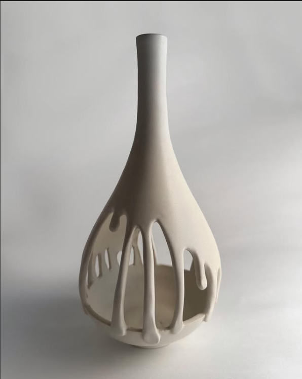
LIQUID SILENCE
(Ceramic Studio Pottery) A avant-garde bottle-neck vessel hand-sculpted in white stoneware. The lower body breaks into an intricate play of negative space, mimicking frozen, suspended drips over an inner base bowl.
Dimensions: 16" H x 7" W (Medium Portrait Scale)
Rs. 18,500
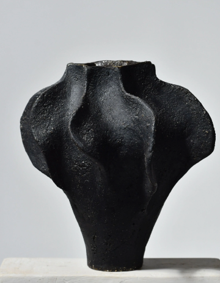
OBSIDIAN WAVE
(Ceramic Studio Pottery) A dramatic, coarse-textured black stoneware vase featuring deep, organic fluting and undulating ridges. The volcanic matte surface heavily diffuses light, emphasizing its powerful sculptural form.
Dimensions: 14" H x 12" W (Medium-Large Scale)
Rs. 22,000
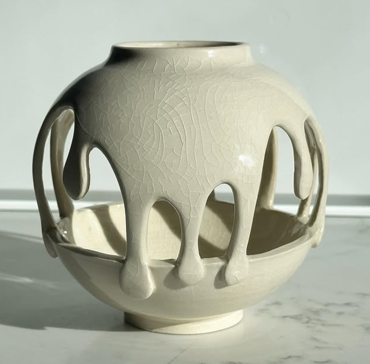
CRACKLE MELT
(Ceramic Studio Pottery) A captivating spherical creation finished in a high-gloss, heavily crazed cream crackle glaze. The outer dome features thick, stylized cutout droplets that fluidly connect down to a structural lower basin.
Dimensions: 10" H x 11" W (Medium Scale)
Rs. 16,500
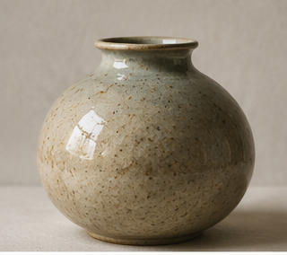
EARTHEN OVAL
(Ceramic Studio Pottery) A timeless, wide-shouldered round vase wheel-thrown with absolute symmetry. Coated in a warm, semi-gloss oatmeal glaze accented with natural, iron-spotted mineral speckles.
Dimensions: 9" H x 9" W (Medium Desktop Scale)
Rs. 9,500
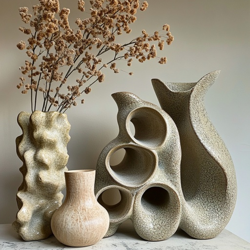
BIOMORPHIC FAMILY (SET OF 4)
(Ceramic Studio Pottery) A curated installation of four distinct architectural stoneware pieces. Features an undulating wave tower, a smooth teardrop flask, an organic fish-tail vessel, and an exquisite central coral-inspired multi-aperture pillar.
Dimensions: Varying heights from 6" to 18" H (Large Group Ensemble)
Rs. 35,000
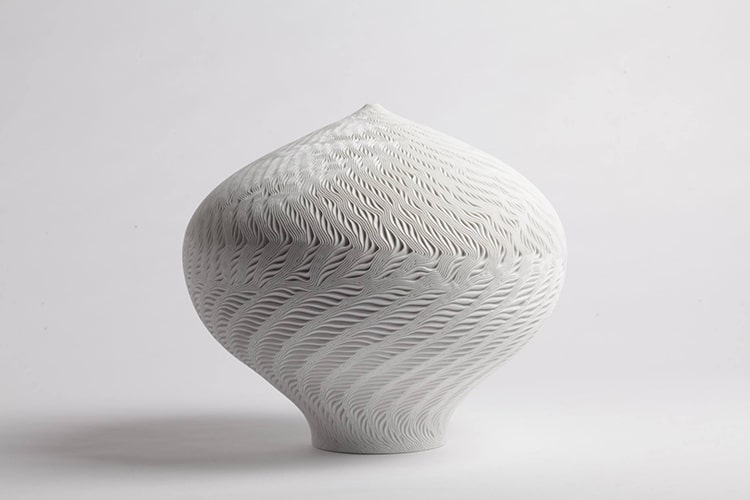
FINGERPRINT APEX
(Ceramic Studio Pottery) An exquisite white porcelain statement piece with an intense, hand-carved comb texture that wraps around the onion-shaped body like windblown sand dunes or fingerprint ridges.
Dimensions: 18" H x 16" W (Large Showcase Scale)
Rs. 21,000
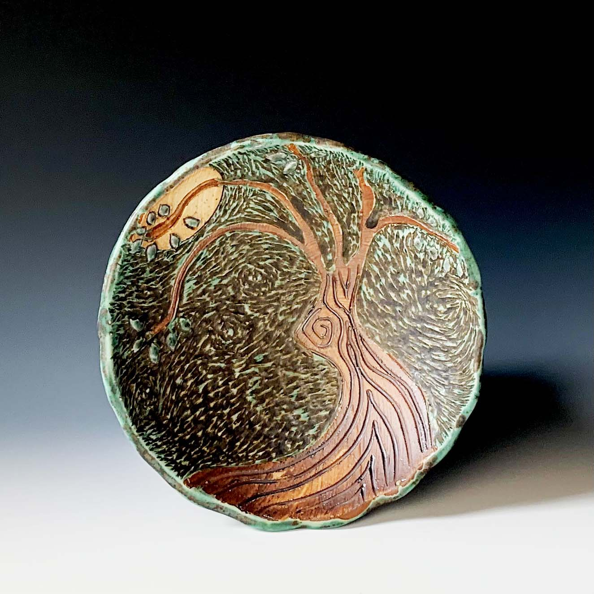
ARBOR LUNA
(Ceramic Studio Pottery) A hand-carved, sgraffito-style decorative ceramic charger plate depicting a stylized tree reaching towards a crescent moon. Richly glazed in oxidized coppers, deep brown slips, and earthy greens.
Dimensions: 12" Diameter (Medium Wall/Display Scale)
Rs. 12,500
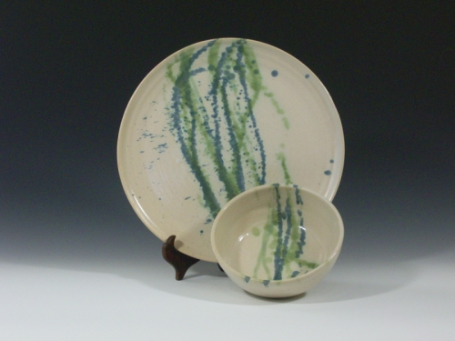
OCEAN REED DUO
(Ceramic Studio Pottery) An organic 2-piece display set consisting of a wide charger plate and a nested matching bowl. Formed from raw cream clay base and layered with abstract, expressive splatters of deep forest green and cobalt blue glazes.
Dimensions: Plate: 13" W | Bowl: 6" W (Medium Set Scale)
Rs. 11,000
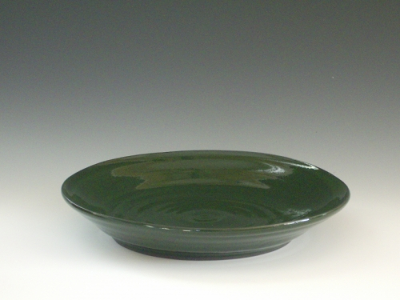
FOREST FLOOR
(Ceramic Studio Pottery) An elegant, low-profile decorative platter wheel-thrown from dense iron-stone. The ultra-smooth interior features a high-gloss glaze mirroring the dark, rich tones of a pine canopy.
Dimensions: 2.5" H x 12" Diameter (Medium Display Scale)
Rs. 5,800
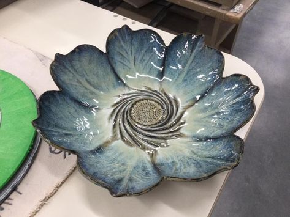
CERULEAN BLOOM
(Ceramic Studio Pottery) An exquisite conversational piece meticulously hand-pinched to form an open, layered flower. The running reactive glaze pools beautifully into rich blues and frothy creams, centering around a highly textured seed cluster.
Dimensions: 4.5" H x 13" W (Medium-Large Scale)
Rs. 10,500
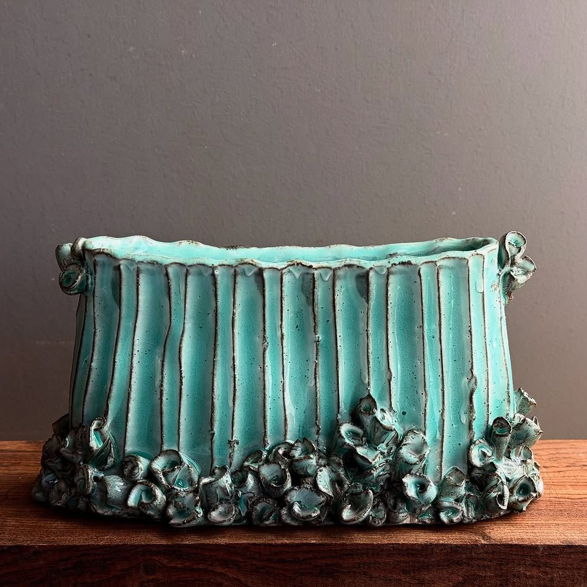
TURQUOISE REEF TROUGH
(Ceramic Studio Pottery) A hand-built oblong slab vessel with deep vertical corrugated fluting. Coated in a vibrant, speckled turquoise matte finish and anchored by a cluster of organic, cup-like coral barnacle details along the base.
Dimensions: 9" H x 15" W x 6" D (Medium Oblong Scale)
Rs. 24,000
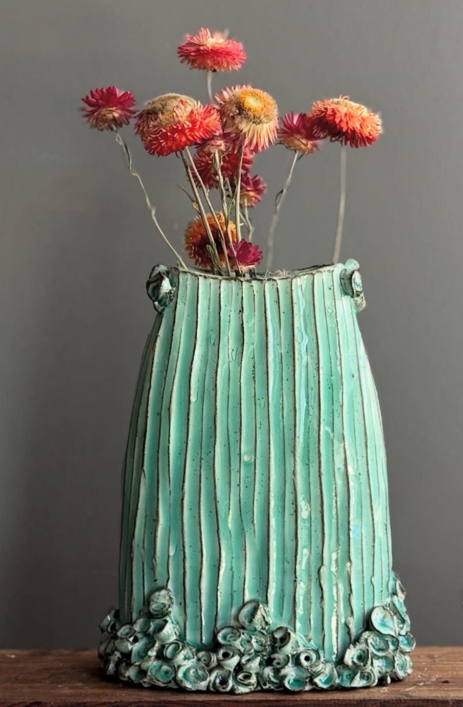
AQUATIC SPIRE
(Ceramic Studio Pottery) A magnificent vertical accent piece companion to the reef series. Features fine-pleated vertical ridges that highlight the light-brown oxide washes peeking through a breathtaking seafoam glaze.
Dimensions: 18" H x 8" W (Tall Pillar Scale)
Rs. 21,500
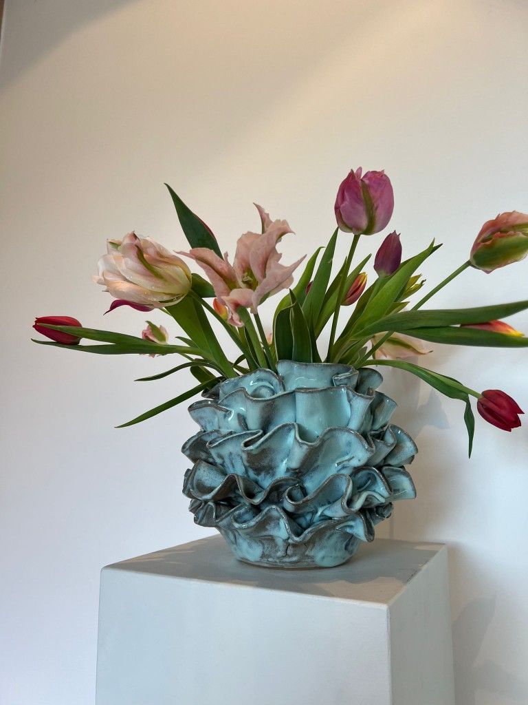
CORAL FROND VESSEL
(Ceramic Studio Pottery) An ultra-dynamic, organic globe vase layered with thick, hand-sculpted cascading ruffles mimicking sea anemones. Dark raw-clay edges outline the folds, giving dramatic contrast to the crystalline turquoise body.
Dimensions: 11" H x 11" W (Medium Volumetric Scale)
Rs. 27,000
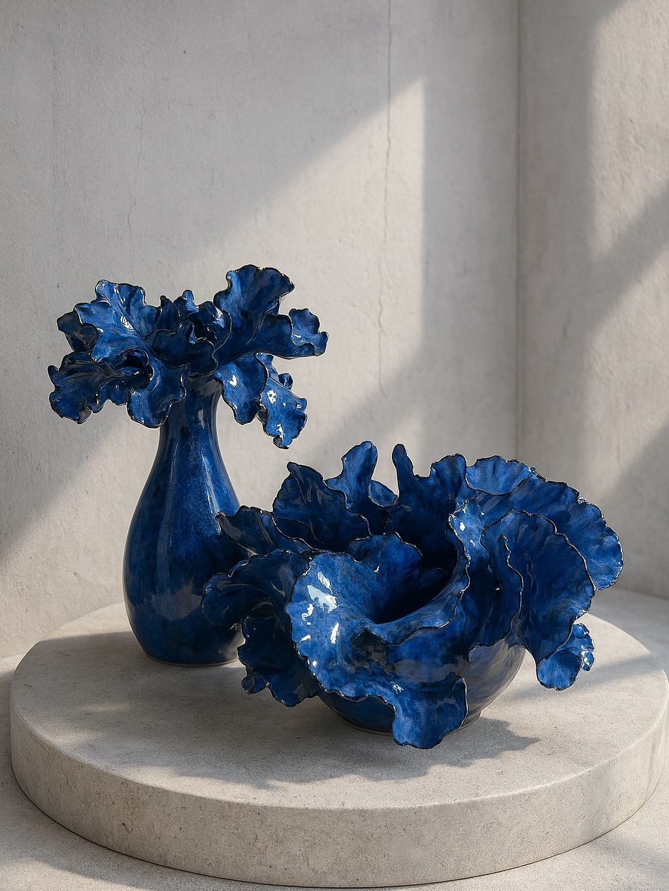
ULTRAMARINE ENSEMBLE (SET OF 2)
(Ceramic Studio Pottery) A breathtaking duo glazed in high-gloss, electric cobalt blue. Includes a curvaceous bottle vase crowned with an exploding ruffled lip, and a matching centerpiece bowl featuring wildly chaotic, undulating folds.
Dimensions: Vase: 14" H x 7" W | Bowl: 8" H x 12" W (Medium Group Scale)
Rs. 36,500
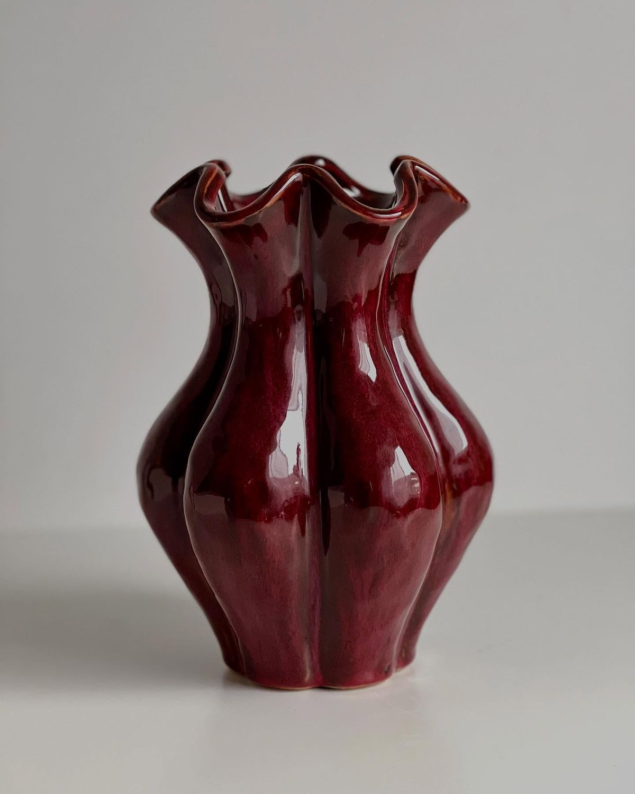
SCARLET CORSAGE
(Ceramic Studio Pottery) High-fired stoneware displaying a deep, luscious oxblood copper red glaze. The body features wide vertical folds that gather at a cinched waist before dramatically flaring out into an elegant, highly pleated rim.
Dimensions: 12" H x 9" W (Medium Classic Scale)
Rs. 16,000
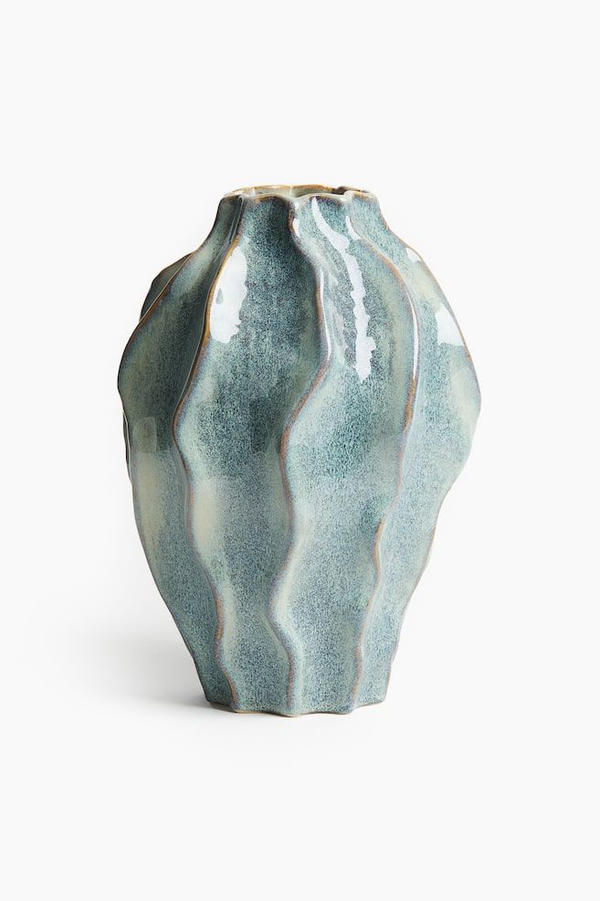
SAGE RIPPLE
(Ceramic Studio Pottery) A soothing, heavy-bottomed gourd-style vase featuring gentle, sweeping vertical wave ridges. Glazed in a beautifully mottled, matte sage green and dusty slate blue crystalline overcoat.
Dimensions: 13" H x 9.5" W (Medium Tabletop Scale)
Rs. 14,800
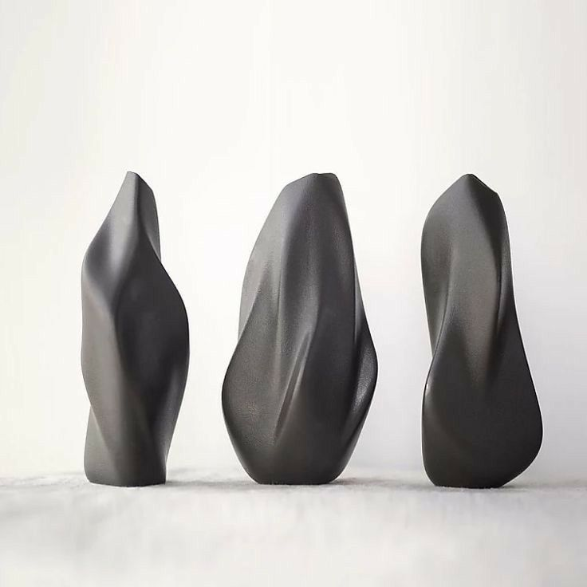
THE REVERIE TRIO (SET OF 3)
(Ceramic Studio Pottery) Three sleek, architectural contemporary stoneware pillars finished in a gorgeous, velvety satin-matte charcoal black. Each column features a slightly varied, organic fluid twist that catches light elegantly.
Dimensions: Left: 14" H | Center: 15" H | Right: 13.5" H (Large Group Scale)
Rs. 39,000
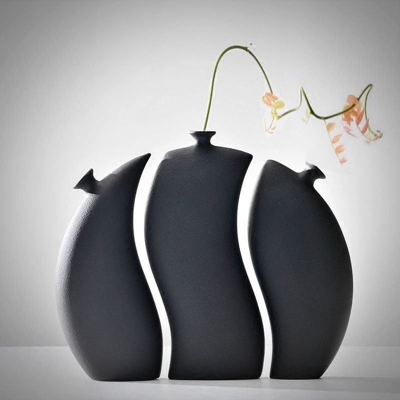
SHADOW ECLIPSE (SET OF 3)
(Ceramic Studio Pottery) A stunning three-piece modular installation in a fine-textured matte black stoneware finish. Each asymmetrical vessel features fluid, undulating contours that interlock harmoniously to form a dramatic, unified geometric horizon.
Dimensions: Combined: 12" H x 14" W x 4" D (Medium Landscape Display)
Rs. 32,500
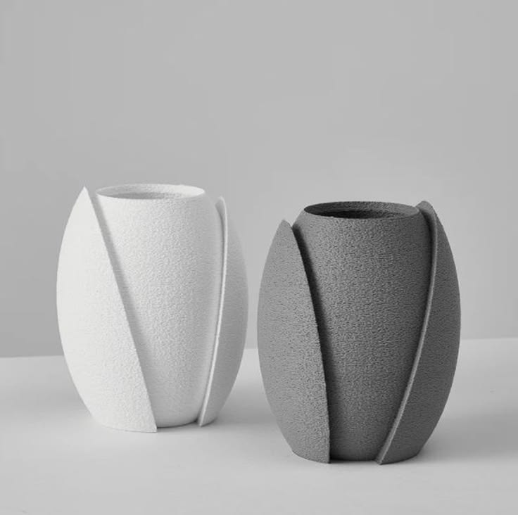
SILENT CHRYSALIS (PAIR)
(Ceramic Studio Pottery) An architectural pair of biomorphic vases reminiscent of unfurling flower pods or cocoons. Hand-formed with a coarse, highly tactile sand-grain texture, featuring elegant outer overlapping clay panels in stark white and stone grey.
Dimensions: Each: 9.5" H x 7" W (Medium Desktop Pair)
Rs. 20,000

OCEANIC HELIX
(Ceramic Studio Pottery) A powerful, chunky statement piece featuring deeply carved, cascading sculptural waves that spiral around the core. Covered in a rich, high-gloss reactive midnight blue glaze that collects beautifully into deep indigo pools.
Dimensions: 14" H x 11.5" W (Medium-Large Showcase Scale)
Rs. 16,500
.jpg)
FACETED MONOLITH
(Ceramic Studio Pottery) Inspired by master glassworks, this heavy studio stoneware pillar is meticulously hand-carved with large, smooth concave dimpled facets. Finished in an ultra-luxurious satin obsidian glaze that reflects light like polished river stone.
Dimensions: 17" H x 8" W (Tall Masterpiece Scale)
Rs. 29,000
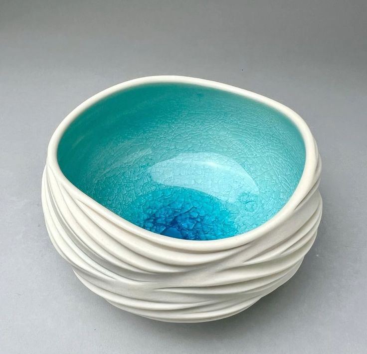
LAGUNA BOWL
(Ceramic Studio Pottery) A breathtaking sensory contrast. The outer surface is hand-coiled with unglazed, matte white textured ridges resembling ocean waves, opening up to reveal an intensely vibrant, heavily crackled pool of crystalline turquoise glaze within.
Dimensions: 6" H x 10" Diameter (Medium Centerpiece Bowl)
Rs. 10,500